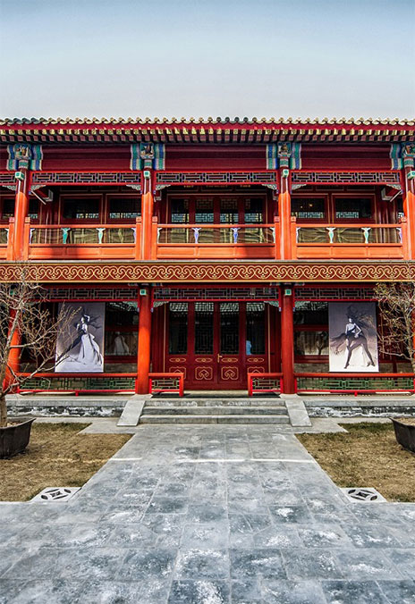

凤冠霞帔金缕钗，鬓髫梳头宫样妆。
精巧讲究的古典器皿，
古风汉韵的传统婚礼尽显雍容华贵。
时光仿佛回溯到千百年前，
循古礼，拜天地、 敬高堂，
许下庄重的誓言，
举案齐眉至鬓白。
现代中式礼服，是在传统的中国元素上，采用西方立体剪裁工艺，将中国传统的文化和风貌得以再现，从而以现代人的审美需求来打造富有传统韵味的婚庆吉服。例如改良版的礼服，就是在传统旗袍的廓形上加入现代流行元素，最常见的就是旗袍加鱼尾廓形这一典范设计。
更多》
新娘在选择中式妆容时需要注意哪些？
粉底要选择遮瑕力强的产品，但要避免过于白皙。中式妆容的眼妆不适宜五颜六色，推荐金色和红色的搭配，能够凸显新娘的气质。建议新娘不要选择韩式粗平眉，以采用弯月眉最佳，千万不要选择细弯的眉型，否则会让新娘显得刻薄。
如何打造出具有个人特色的中式婚礼妆容？
在自然光下找出一种接近自己肤色的、较薄的粉底，让妆容呈现出最自然纯净的自然肤色，自然裸色眼影让眼妆更自然 有立体感。精致的隐形眼线配合立体睫毛让眼妆更加真实自然。红色，橘红色，正红色的口红是最合适中式婚礼的颜色。
金器，
因其色泽夺目，喜庆华贵。取其吉祥之意，寓意新人拥有“情比金坚”的美满姻缘。在传统中式婚礼中，新娘的裙褂多以金器作配饰。双方长辈馈赠五金，寓意祝福新人富贵吉祥、情比金坚。
金饰之美满寄托
婚嫁金饰上寓意美好的纹饰，寄托着父母
以及亲朋好友对新人美好的祝福。除了为
人熟知的龙凤纹饰，牡丹花、比翼鸟、双
喜字等婚庆主题的纹样，也是颇受新人喜
爱的吉祥图案。这些造型别致且寓意美满
的金饰，定是新娘最完美的。
更多
金饰之龙凤镯
龙凤镯可以说是中式婚礼的经典之作，亦
是结婚典礼上不可或缺的一环。在传统中
式结婚礼仪上，双方家长会各给新娘一对
龙凤镯，这对龙凤镯不仅有长辈瑰赠的意
思，还蕴含着对一对新人龙凤呈祥、情比
金坚的祝福。特别是在我国岭南地区，女
儿在出嫁之时需以黄金饰品为嫁妆，寓意
女方今后生活富足、衣食无忧。如今的龙
凤镯，一改旧时厚重传统的设计，通过立
体镂空雕花等工艺，令龙凤镯变得“轻盈”
起来，更符合年轻人的审美。一对造型考
究、形态立体细致的黄金龙凤镯，不仅是
新娘子婚嫁之日的绝佳选择，更是日后节
庆或隆重场合的完美配饰。礼的话尽量免
去防晒霜的步骤，因为防晒霜往往有反射
光线的作用，对于爱出油的新娘来说会使
脸部显得更加油腻。
更多
金饰之选购事项
与西式的钻石珠宝不同，中式婚礼中所佩
戴的黄金饰品有着许多的讲究，佩戴的样
式和数量都是有严格要求的。稍不注意，
好彩头可是保留不住了。挑选黄金饰品有
有神技巧？那些注意事项是新娘子们一定
要知道的呢？
更多
从“昏礼”到“婚礼”
在原始社会，炎黄时期，人们有“婚”但“婚不礼”，经常发生抢强婚事件，不光男抢女，也有女抢男。毫无任何制度可言，为了繁衍后代而造成男女关系混乱。于是到了周朝就有了“周六礼”，上承夏商之礼，成型于礼乐盛行的西周，到了春秋战国时期形成了君子风貌的风格，最后在汉民族稳定成型之时被固定下来，在中国的历史长河流传三千余年中一直传承至今，其主要内涵在于，男女之间婚姻合法，一种社会文明的体现。“婚礼”原为“昏礼”古人认为黄昏是吉时，所以会在黄昏行娶妻之礼，不需要奢侈的聘礼，更没有铺张的宴席，没有夸张的新娘妆，形式上也很单调内敛。
更多》
尽显中国人的哲学思想
婚礼礼仪主要的就是“三书”和“六礼”贯穿于整个婚礼过程。三书主要就是“聘书”即订亲之书，在订婚时交换。“礼书”即礼物清单，当中祥列礼物种类及数量，过大礼时交换。“迎书”即迎娶新娘之书，结婚当日接新娘过门时用。
在这三书作用如同现今的结婚证，是古人为保障婚姻所立的有效文字记录，这也是对即将结为连理的新人他们婚姻的保障... ....
更多》
用吉祥的寓意淡化心中的不安
中式婚礼流程主要秉承着对父母的感恩，对生命的敬畏。首先男方出门前要先去祭拜祖先，对前人的尊敬，代表着自己不忘本心。出发接亲，接亲人数以双数为佳，同时在途中要后要一路燃放鞭炮以示庆贺。新郎礼车至女方家时，会有一男童侍持茶盘等候新郎，新郎下车后，应赏男孩红包答礼，再进入女方家。或是一众比新娘小的亲戚孩子，朋友闺蜜要“闹门”，不准其见到新娘，女方可提出条件要新郎答应，通过后才得进入，这么做也是为了给足新娘面子。
更多》
父母之命、媒妁之言下的悸动
“英雄配宝剑,红粉赠佳人”。在中国古代，定亲是男女双方确定婚姻关系、仅次于正式结婚的社会性的重要礼仪。定亲遵循的是“父母之命、媒妁之言”，而处于青春期的少男少女们迫于礼教和社会压力，则会私下偷送信物来表达感情。所赠的宝剑、红粉，不仅具有实用价值，更成为恋人之间两情相悦睹物思人的信物。
簪子和发钗是女性日常生活的必备单品了。情人或夫妇别离时，常常赠送发簪或将发钗一分为二，一半赠给对方，一半自留，待到他日重见再合在一起，以寄托相思之情。
更多》
北京华尔道夫酒店
北京华尔道夫酒店位于
北京市东城区金鱼胡同5-15号
+86 10 8520 8989
BJSWA.Reservations@waldorfastoria.com

坐落于繁华的王府井核心地段的北京华尔道夫酒店，是华尔道夫酒店及度假村在中国的第二家酒店。酒店由两幢风格迥异的宏伟建筑组成——优雅的全铜主楼与古典的华尔道夫胡同客房。新人的婚礼既可追求现代奢华浪漫，也可传承古代皇室风华，同时还将充分感受到一脉相承的华尔道夫服务，从一件件典藏珍品、一幅幅艺术佳作中感受到京派文化的独特韵味，拥有独一无二的体验，开启美好人生新篇章，叙写专属自己的传世故事。
更多》
北京华尔道夫酒店
丽江悦榕庄
富春山居